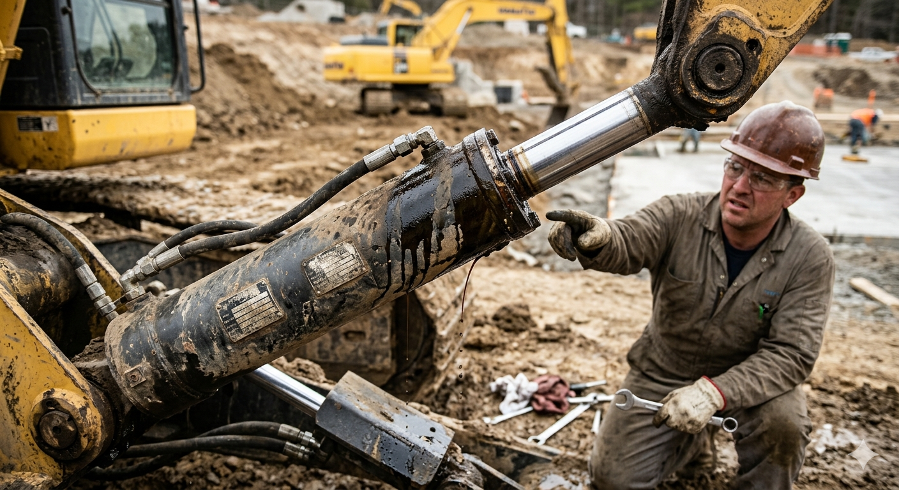
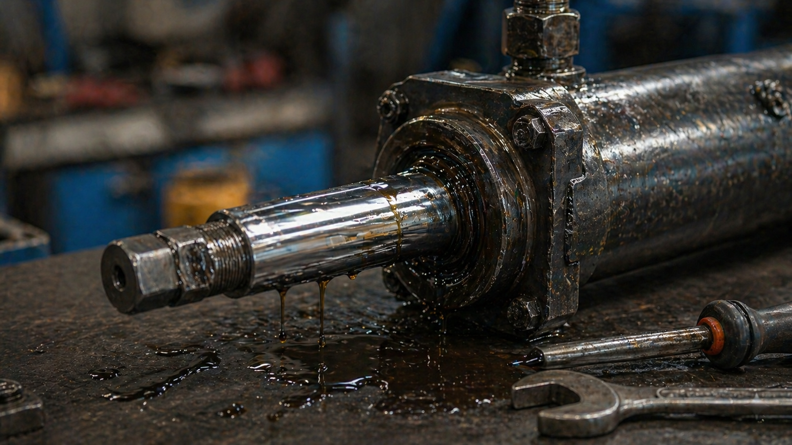
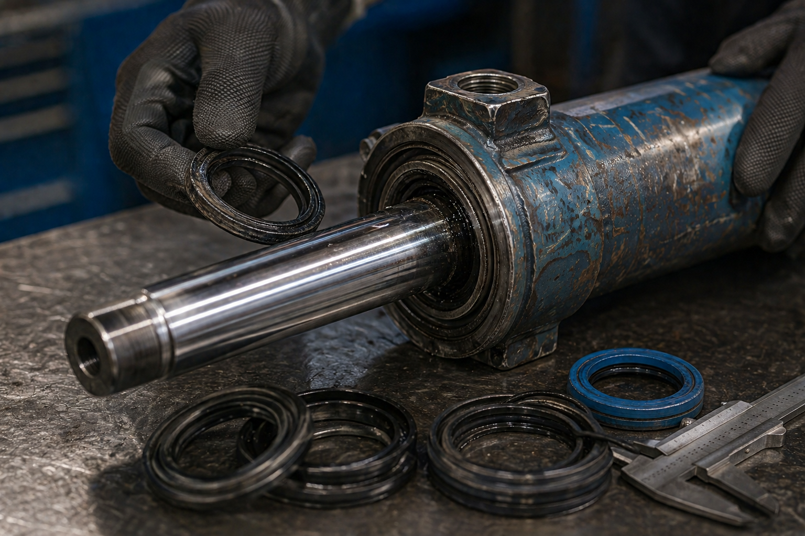
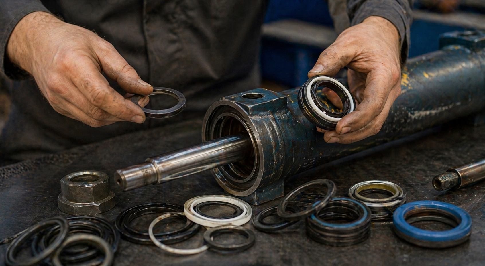

Статті
Матеріали про ущільнення, гідравліку і обслуговування техніки

Коли починає текти гідроциліндр, більшість робить одну й ту саму помилку — ігнорує проблему або намагається вирішити її «по-швидкому».
Читати далі
Ситуація, коли гідроциліндр не тримає тиск, зазвичай проявляється однаково: техніка не фіксується в положенні, стріла або ковш поступово опускається.
Читати далі
Коли мастило починає витікати зі штока гідроциліндра, це вже не «дрібниця», а пряма ознака проблеми, яка сама не зникне.
Читати далі
Манжета в гідроциліндрі — це не деталь «поки не зламається, можна не чіпати». Вона майже ніколи не «вмирає різко» — все починається з дрібних симптомів.
Читати далі
Ремкомплект гідроциліндра — набір ущільнень для відновлення герметичності. Його правильний підбір напряму впливає на те, чи буде циліндр працювати як новий.
Читати далі
Коли доходить до ремонту гідроциліндра, одне з найчастіших питань — що краще ставити: гумові ущільнення чи поліуретанові.
Читати далі
Підбір ущільнень здається простою задачею: зняв старе, купив схоже, поставив — і готово. Але саме тут найчастіше роблять помилки.
Читати далі
Цифри на сальнику — це не «випадкове маркування», а його основні розміри. Якщо їх правильно розуміти, можна без помилок підібрати ущільнення навіть без старої деталі.
Читати далі
Манжета — це ущільнювальний елемент у гідроциліндрі, який відповідає за герметичність і правильну роботу системи.
Читати далі
Гідроциліндр — це один із ключових елементів гідравлічної системи, який перетворює тиск рідини на механічний рух.
Читати далі
Заміна ущільнень у гідроциліндрі здається простою задачею. Але саме на цьому етапі найчастіше роблять помилки, через які циліндр починає текти знову.
Читати далі